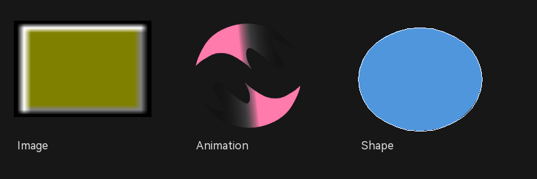

17 图片、动画与绘制
这类控件依赖资源文件或绘制参数，属性面板之外还要检查资源提供者和路径。正式交付前建议在预览中确认资源能正常加载，再导出工程。

图 17-1 从左到右：Image 位图、Animation 动画帧、Shape 圆形
17.1 图片 Image
17.1.1 准备资源
- 把图片所在目录加入资源提供者，见 资源管理。
- 假设提供者名称为
demo，图片文件为images/logo.png。 - 图片路径填写为
provider:demo/images/logo.png。
属性面板中的图片路径示例：
provider:demo/images/logo.png17.1.2 常用属性
| 项目 | 说明 |
|---|---|
| 图片路径 | 优先使用 provider 相对路径；也可以使用运行时资源 ID（如果已配置） |
| 缩放方式 | stretch（默认拉伸）、fit-center（等比完整显示并居中）、center-crop（等比裁切填满）、none（原始尺寸）、tile（平铺） |
| 透明/背景 | PNG 透明通道是否保留；是否需要底色 |
| 源矩形 | 只显示图片的一部分时设置 source rect（如支持） |
17.1.3 常见问题
| 现象 | 检查 |
|---|---|
| 图片空白 | 提供者名称、相对路径、大小写、文件是否随导出包复制 |
| 图片变形 | 控件宽高比、缩放方式；不要同时依赖拉伸和固定尺寸 |
| 图片被裁切 | 父 Panel 的 clip-children、控件 rect 或源矩形 |
| 导出后路径失效 | 导出目录的资源结构；绝对路径只在当前机器有效 |
17.2 动画 Animation
17.2.1 准备 LuotiAni 资源
Animation 读取的是 LuotiAni 的 JSONC 描述文件，不是单张图片。JSONC 内部还会引用帧图片等资源，因此整个动画目录都需要能被资源提供者解析。
provider:demo/animations/button.jsonc- 把动画目录加入资源提供者（例如
demo）。 - 放置 Animation，在动画路径属性中填写 JSONC 路径。
- 设置是否自动播放、是否循环；需要外部控制时保持 playing 关闭。
- 在预览中观察帧变化和控件尺寸；导出后检查动画资源是否随包复制。
17.2.2 常用属性
| 项目 | 说明 |
|---|---|
| 动画路径 | JSONC 文件路径；相对路径基于资源提供者 |
| playing | 是否播放/暂停；运行时可通过代码切换 |
| loop | 播放到最后一帧后是否循环 |
| frame / total-frames | 当前帧和总帧数，通常用于调试或进度显示 |
| 尺寸 | 空路径时可能使用 JSONC overview 的画布尺寸；建议显式设置控件 rect |
路径指向的是 JSONC 描述文件，不是图片文件本身。若动画只显示第一帧或空白，先检查 JSONC 中的 src 图片路径是否能从同一资源提供者解析。
17.3 图形 Shape
17.3.1 形状类型
| 类型 | 用途 |
|---|---|
rect | 普通矩形边框 |
filled-rect | 填充矩形 |
round-rect | 圆角矩形；半径配合属性设置 |
circle / ellipse | 圆/椭圆，适合图标底、状态点 |
polyline / polygon | 折线/多边形；需要点集 |
17.3.2 颜色与点集
Shape 的填充、描边和线宽通过属性面板设置。多边形/折线的点集一行一个点，坐标相对 Shape 控件左上角：
0,80
80,0
160,80上面的点集表示一个三角形：左下 → 顶部中间 → 右下。点集只对 polyline/polygon 有意义，矩形/圆形不需要手写点集。
- 放置 Shape，选择形状类型。
- 设置填充色、描边色和线宽；需要透明填充时把填充 alpha 设为 0。
- polyline/polygon 在点集行填写坐标，每行
x,y。 - 在预览中检查形状边界和尺寸；复杂图形建议改用 SVG/图片资源。
17.3.3 事件与使用建议
- Shape 常作为装饰或命中区域；需要点击时确认该形状是否参与普通命中。
- 用圆角矩形做卡片底时，把圆角半径和父容器内边距一起考虑。
- 大量点集或复杂图形优先使用图片/SVG，避免在 Designer 中维护长点集。
17.4 资源提供者与导出
- 资源提供者只保存“名称 → 目录”的映射，不会自动把文件复制到工程目录。
- 资源引用使用
provider:名称/路径，名称和路径区分大小写。 - 导出工程时检查生成目录中的资源结构和路径；缺失资源通常表现为空白或回退图形。
- 修改资源目录后，重新打开预览并检查所有引用该资源的控件。
17.5 媒体控件自检
- 图片/动画路径是否使用 provider 相对路径。
- 控件尺寸是否与资源宽高比匹配，是否被父容器裁切。
- 动画是否 playing、loop 设置正确，帧是否正常显示。
- Shape 的颜色、线宽和点集是否符合预期。
- 预览通过后再导出，并在导出目录中再运行一次。